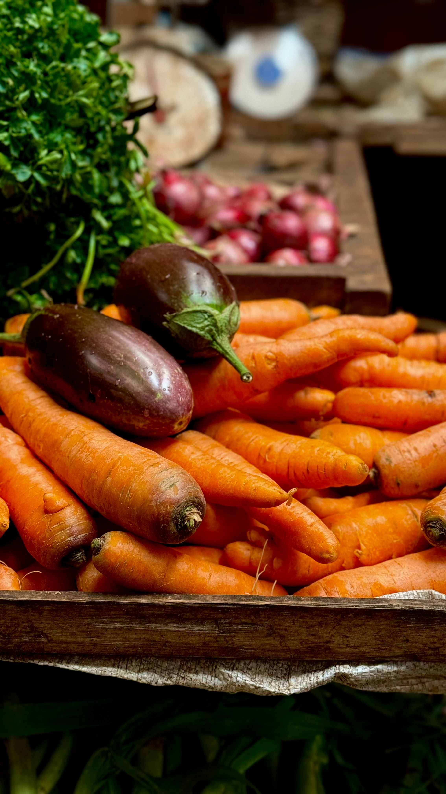
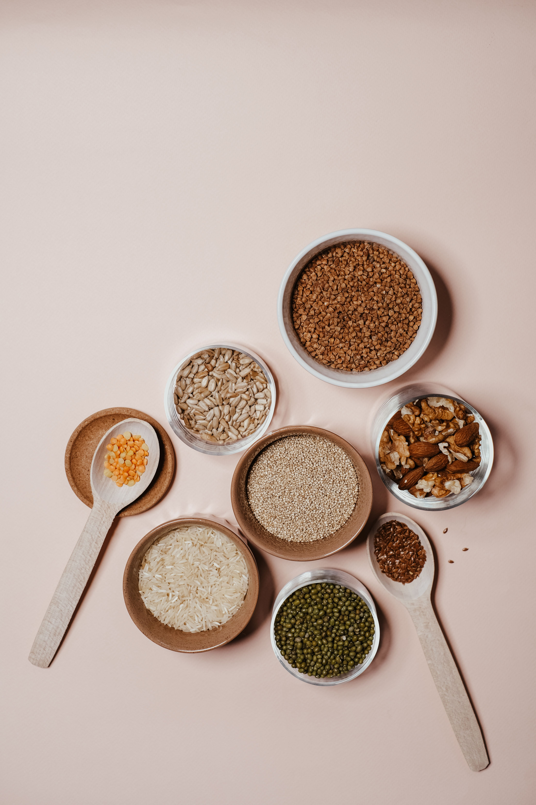
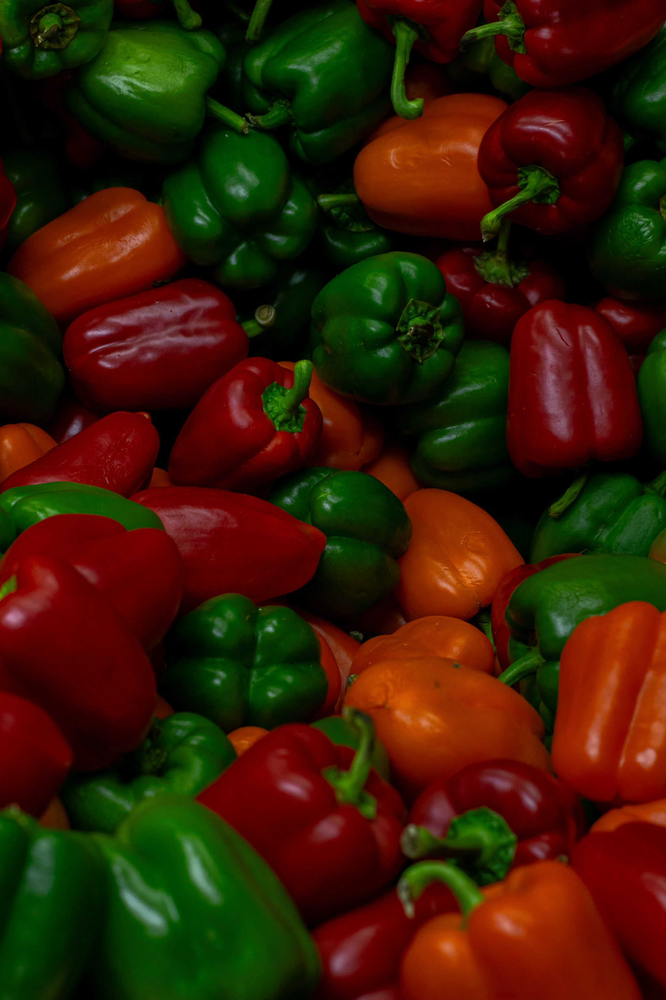

Végétarien
Le régime végétarien exclut la viande et le poisson. Il est riche en fibres, vitamines et minéraux.
Vegan
Le régime vegan exclut tous les produits d’origine animale. Il repose sur une alimentation 100% végétale.
Flexitarien
Le flexitarisme encourage une consommation réduite de viande, tout en privilégiant les produits végétaux.
Omnivore responsable
Ce régime inclut tous les aliments, mais en privilégiant les produits locaux, de saison et durables.


